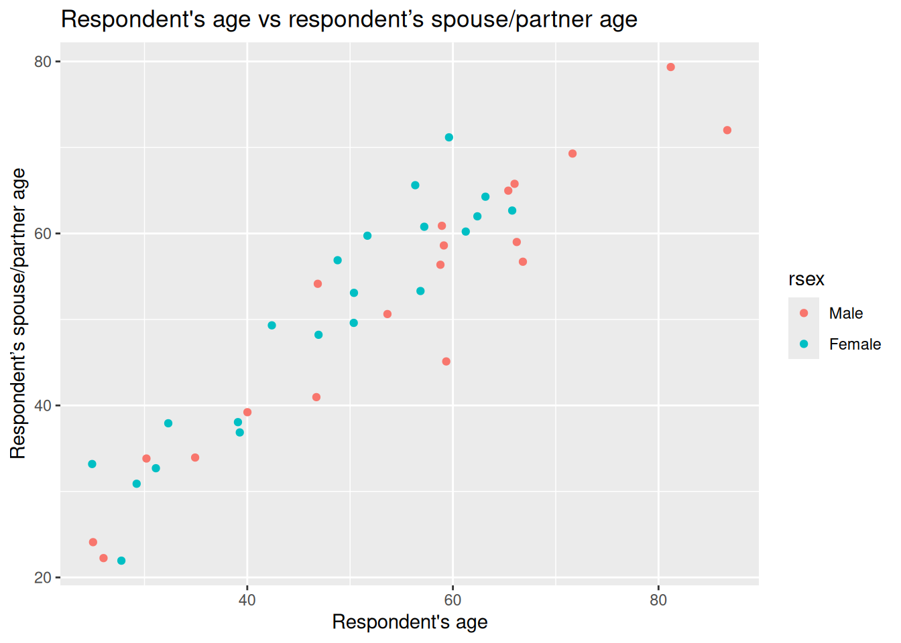
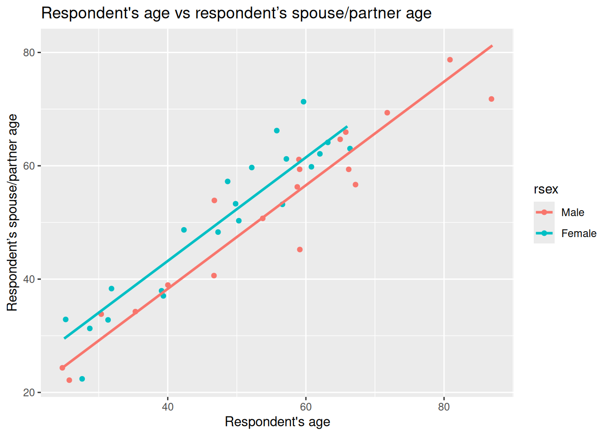
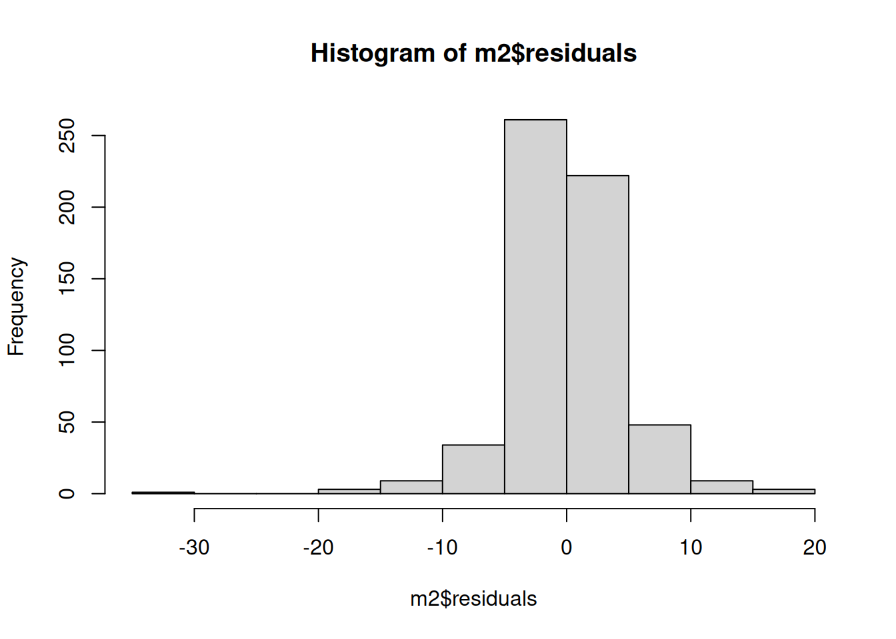

install.packages("moderndive")Multivariate linear model
Introduction
In the last lab we mentioned that one of the advantages of linear regression is that we can include more than one independent (explanatory) variable to evaluate their relationship with the dependent variable. This technique is known as multivariate linear regression. In practice, few studies in quantitative social research rely only on simple linear models. This is because often in reality there is more than one variable associated to a social phenomenon. This is why it is important to familiarise yourself with the multivariate linear model.
Multivariate model
The multivariate linear model is based on the same principles as the simple linear model. It is worth remembering that this model is appropriate only when we have a numeric (interval/ratio) dependent variable. As a rule-of-thumb, a variable can be treated as numeric when you have at least 7 ordered categories (Fogarty, 2019). As mentioned before, we can use any type of independent variables, such as ordinal, categorical and numeric. More than one and a combination of these can be analysed simultaneously.
Paralell slopes
We will follow-up with the example we used before introducing the simple linear model to further illustrate the advantages of using more than one variable. To do so, please set your RStudio environment as follows:
- Go to your ‘Quants lab group’ in RStudio Cloud;
- Open your own ‘NILT2’ project from your ‘Quants lab group’;
- Once in the project, create a new R Script file (a simple R Script, NOT an
.Rmdfile). - Save the script document as ‘multivariate_linear_model’.
Reproduce the code below, by copying, pasting and running it from your new script.
First, install the moderndivepackage.
Load the tidyverse and moderndive libraries (tidyverse was pre-installed for you before, you do not need to re-install it in this project) and read the nilt_r_object.rds file which is stored in the ‘data’ folder and contains the NILT survey.
Once again, create a minimal random sample for the following example using the code below:
As a follow-up, we will draw a scatter plot using ggplot specifying the age of the respondent rage on the X axis and the respondent’s partner/spouse age spage on the Y axis. This time, we will add sex rsex as a third variable defining the color argument.
# plot
ggplot(nilt_sample, aes(x = rage, y = spage, color = rsex)) +
geom_point(position = "jitter") +
labs(
title = "Respondent's age vs respondent’s spouse/partner age",
x = "Respondent's age", y = "Respondent’s spouse/partner age"
)
What do you observe in the plot above? …
The first thing to note is that females and males go in the same direction. When the respondent’s age increases the age of the partner increases as well. An interesting thing is that females tend to be located higher with respect to the Y axis compared to the male dots.
Therefore, we can imagine that not only the age of the respondent is involved in the decision on how people choose their partner, but also the respondents’ sex. We can draw two lines, one for male and the other for female respondents, instead of only a general one as we did in the previous lab. To do this we will use the ggplot function in combination with the geom_parallel_slopes function from the moderndive package:
# plot
ggplot(nilt_sample, aes(x = rage, y = spage, color = rsex)) +
geom_point(position = "jitter") +
geom_parallel_slopes(se = FALSE) +
labs(
title = "Respondent's age vs respondent’s spouse/partner age",
x = "Respondent's age", y = "Respondent’s spouse/partner age"
)
Well, our suspicion that the points representing female respondents were generally above the male ones is turning out to be true. What we have in the plot above are the optimal parallel lines that describe our points the best for each group. The interpretation of our visualizations so far is:
- both males and females partner’s age is positively associated with respondent’s age.
- This association is different for males and females. Overall, females choose older partners compared to males.
But what is the magnitude of these relationships? We can easily extend the simple linear model by adding rsex as a second explanatory variable as follows:
m1 <- lm(spage ~ rage + rsex, nilt_sample)
m1
Call:
lm(formula = spage ~ rage + rsex, data = nilt_sample)
Coefficients:
(Intercept) rage rsexFemale
1.7383 0.9138 4.9190 From the output, we see that there is one intercept \(\beta_0\), one slope coefficient \(\beta_1\) for the numeric variable rage, and another coefficient \(\beta_2\) for the categorical variable. If you observe closer, the output appended only one of the two categories for rsex. This is because categorical variables take one of the categories as the reference. The variable that is not shown is the reference, ‘Male’, in this case.
Being more precise with our previous interpretation, we can say there is a positive relationship between both males and female participants’ age and their partner’s age by a factor of 0.91 for every additional year in age. Also, female respondent’s partners are expected to be 4.9 years older compared to male respondents.
Before we move on, it is worth mentioning that the criterion to fit the coefficient is the same as in the linear model. This procedure guarantees to produce the smallest possible sum of squared residuals (SSR) using the ordinary least square method (OLS). We can check if the SSR was reduced by adding this extra variable by computing the SSR as we did before:
Yes, it improved! Before, it was about 1,175, as we saw in the last lab workbook.
Multivariate model specification
After the introduction of the simple linear model, the formal definition of the multivariate linear model should not look that scary, right? In essence, this equation tells us how \(\hat{y}\) is described/explained by other variables.
\[ \begin{aligned} \hat{y} = \hat{\beta_0} + \hat{\beta_1}*x_1 + \hat{\beta_2}*x_2 + ... + \hat{\epsilon}, && \epsilon ~ N(0, \sigma) \end{aligned} \]
We can break down the equation above in smaller pieces as follows:
- \(\hat{y}\) is the dependent variable, which is explained by
- \(\hat{\beta_0}\) the intercept, plus
- \(\hat{\beta_1}\) the slope coefficient for the first independent variable times the value of \(x_1\) variable 1, plus
- \(\hat{\beta_2}\) the slope coefficient for the second independent variable times the value of \(x_2\), plus
- \(...\) any number of independent variables, plus
- \(\hat{\epsilon}\) the error/residual term.
- \(\epsilon ~ N(0, \sigma)\) this bit tell us that the residuals are normally distributed.
R syntax for the multivariate linear model
(You don’t need to reproduce the code of this section in your script).
The general syntax in R is as follows:
lm(formula, data)Where the formula is given by a dependent variable which is followed by ~ one or more independent variables joined by a plus sign +:
dependent_variable ~ independent_variable1 + independent_variable2 ...In the previous section, we used a small random sample of 40 people only. Now, let’s fit a multivariate linear model using all the observations in the nilt dataset. In addition to the respondent age rage and rsex, we might be interested to know whether the type of place where they live (e.g. big city, village, farm/country, etc.) placeliv plays a role in how people choose their partner.
First, we need to coerce the placeliv variable as factor. And we will have a quick look at a table of this variable to have an idea of how respondents are distributed and see how the factor levels are ordered.
# Coerce to factor
nilt <- nilt %>%
mutate(placeliv = as_factor(placeliv))
# Create table
table(nilt$placeliv)
Dont know ...a big city
0 168
the suburbs or outskirts of a big city a small city or town
233 477
a country village a farm or home in the country
176 146 We see that most of the respondents live in ‘a small city or town’. Also, note that the category ‘Dont know’ contains 0 observations. Let’s use the function droplevels() to remove the unused category in our variables. This also means that the first level in this variable will be ‘a big city’. Then, we will fit the model and store it in an object called m2.
# remove unused levels
nilt <- droplevels(nilt)
# boxplot
m2 <- lm(spage ~ rage + rsex + placeliv, nilt)
m2
Call:
lm(formula = spage ~ rage + rsex + placeliv, data = nilt)
Coefficients:
(Intercept)
1.34251
rage
0.94147
rsexFemale
3.79426
placelivthe suburbs or outskirts of a big city
0.02099
placeliva small city or town
-0.71196
placeliva country village
0.25645
placeliva farm or home in the country
-0.01280 From the result:
- We confirm the positive relationship between the respondent’s age and their partner by a factor of 0.94.
- The difference in years by sex now is smaller. We see that the age of a female respondent’s partner is expected to be 3.8 years older compared to males.
- As before, we see that the result appended the name of the categories to the
placelivvariables. This is because it is comparing each of the categories with the category of reference, in this case, ‘a big city’. The interpretation must be in comparative terms. For instance, the age of the respondent’s partner in ‘the suburbs or outskirts of a big city’ is expected to be 0.02 years older than the partner of someone living in a ‘a big city’. Overall, the coefficients do not differ much as a function of the type of place of where they live. The largest expected difference is for people living in ‘a small city or town’, where partner’s age is expected to be -0.7 years old compared to those living in ‘a big city’.
In general, our model can be expressed as:
\[ \hat{spage}_i = \hat{\beta_0} + \hat{\beta_1}*rage_i + \hat{\beta_2}*rsex_i + \hat{\beta_3} * placeliv_i \] So, if we wanted to know the expected age of the partner of a 40 years old female who lives in a small city or town, we can use and apply the formula above:
1.34 + 0.94 * 40 + 3.80 * 1 + -0.7 * 1[1] 42.04The expected age of a 40 year old female’s partner is, therefore, 41.7 years old.
Model evaluation
We can obtain more details from our model using the summary() function.
summary(m2)
Call:
lm(formula = spage ~ rage + rsex + placeliv, data = nilt)
Residuals:
Min 1Q Median 3Q Max
-34.737 -2.176 -0.139 2.214 19.530
Coefficients:
Estimate Std. Error t value
(Intercept) 1.34251 0.86727 1.548
rage 0.94147 0.01202 78.311
rsexFemale 3.79426 0.37761 10.048
placelivthe suburbs or outskirts of a big city 0.02099 0.72637 0.029
placeliva small city or town -0.71196 0.65391 -1.089
placeliva country village 0.25645 0.75903 0.338
placeliva farm or home in the country -0.01280 0.75787 -0.017
Pr(>|t|)
(Intercept) 0.122
rage <2e-16 ***
rsexFemale <2e-16 ***
placelivthe suburbs or outskirts of a big city 0.977
placeliva small city or town 0.277
placeliva country village 0.736
placeliva farm or home in the country 0.987
---
Signif. codes: 0 '***' 0.001 '**' 0.01 '*' 0.05 '.' 0.1 ' ' 1
Residual standard error: 4.524 on 583 degrees of freedom
(614 observations deleted due to missingness)
Multiple R-squared: 0.9143, Adjusted R-squared: 0.9134
F-statistic: 1037 on 6 and 583 DF, p-value: < 2.2e-16From the summary, we note that the 1st and 3rd quartile of residuals are symmetric (-2.18 to 2.21). This means that 50% of the estimated/predicted ages are approximately \(\pm\) 2.2 years away from the observed partner’s age. Though, the minimum and the maximum residuals are not symmetric, this could be due to some extreme observed values. We can have a look to a histogram of the residuals to have a clearer idea.
hist(m2$residuals)
Overall they seem normally distributed with the exception of the negative value to the left.
Secondly, from the summary we can see that respondent age rage and respondent sex rsex have a significant association with the dependent variable (indicated by the p-value < 0.001). You can confirm this in the fourth column of the coefficients (‘Pr(>|t|)’). Also, the std. error for the coefficients of this variables is small. However, the std. error for the categories of the place of where they live placeliv is large when compared to the estimated coefficients in the first column. In fact, when we look at the fourth column we see that the p-values are much larger than 0.05, which means that there is not a significant relationship between any of the type of places where they live and the partner’s respondent age. What this means is that the place where people live does not play a role in the age of the respondent’s partner.
Third, this time we see that the multiple R-squared is slightly different from the adjusted R-squared. This is because the adjusted considers the number of independent variables included in the model. This is why the adjusted r-squared is preferred for multivariate models. This shows our model explains 91.34% of the variance of the respondent’s partner age.
Lastly, it is important to note that even though we use the full nilt data set, 614 of the observations were not considered in the analysis. This is because we do not have information for these respondents. Probably some do not have a partner or preferred not to say their sex, for example.
Assumptions
You need to know that these estimates are backed by well-established patterns studied in probability and statistics. Therefore, the linear model, as many other statistical techniques, provides reliable estimates if the data follows certain characteristics. These are known as assumptions. We will not go into detail with these. However, it is important that you have them in mind when you evaluate your results and also evaluate others.
There are many assumption for the linear regression model, but we will introduce four of the most commonly assessed (Boston University School of Public Health, 2016):
- Linearity: The relationship between X and the mean of Y is linear.
- Homoscedasticity: The variance of residual is the same for any value of X.
- Independence: Observations are independent of each other.
- Normality: For any fixed value of X, Y is normally distributed.
A first step to identify potential violations of the points above is to assess the distribution of the residuals by looking to the quartiles, mean and histogram. There are many other specific tests and techniques that can help us to know whether we met the assumptions and more importantly that can help to correct them.
For the moment, we will leave it here. The important thing is to be aware of the existence of these potential problems and to be transparent with the results you produce. For now, I would suggest you to acknowledge the limitations of your assumptions checks.
Lab activities
Set an R Markdown document in your ‘NILT2’ project as following:
- Create a new
Rmdfile, type ‘Multivariate linear model’ in the ‘Title’ section and your name in the ‘Author’ box. Leave the ‘Default Output Format’ asHTML. - Save the Rmd document as ‘Multivariate_lab’.
- Erase all the contents in the Rmd default example with the exception of the first bit (that contains the YAML) and the first R chunk (which contains the default chunk options), that is all from line 12 and on.
Using the nilt object do the following by inserting a new chunk for each bullet points below (remember to write the comments and observations for the results as simple text outside the chunks):
- Load the packages, and the data that you will need in your file using the code below:
## Load the packages
library(tidyverse)
library(moderndive)
# Read the data from the .rds file
nilt <- readRDS("data/nilt_r_object.rds")- Print a table for the highest level of qualification
highqualusing thetable()function. - Generate a scatter plot using
ggplot. Withinaes(), locate the number of hours worked a weekrhourswkon the X axis and the personal incomepersinc2on the Y axis, and specify thecolorof the dots by the highest level of qualificationhighqual. Use thegeom_point()function and ‘jitter’ the points using the argumentposition. Add the parallel slopes using thegeom_parallel_slopes()function and set the standard errorsetoFALSE. What is your interpretation of the plot? Write down your comments to introduce the plot. - Fit a linear model using the
lm()function to analyse the personal incomepersinc2using the number of hours worked a weekrhourswk, the highest level of qualificationhighqual, and the age of the respondentrageas independent variables. Store the model in an object calledm4and print the summary. - Comment on the results of the model by mentioning which of the variables is significant and their respective p-value, the adjusted r-squared of the model, and the number of observations used to fit the model.
- Plot a histogram of the residuals for model
m4. Do they look normally distributed? Can we trust our estimates or would you advise to carry out further actions to verify the adequate interpretation of this model? - Discuss your answers with your neighbour or tutor.